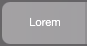
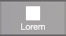
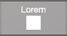
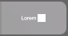

Defining or changing a button
When you define a
button, you can add a text label, an icon, or text and an icon, then assign a single command or a
script to perform.
Another type of button that you can create is a
popover button, which displays a
popover. See
Working with popovers on layouts.
To define or change a button:
1. If you're defining a button that performs a script (as opposed to a single FileMaker Pro Advanced command), create the script.
See
Creating and editing scripts.
2. In
Layout mode, from the
Layout pop-up menu, choose the
layout for the button. Then:
•To define a new button, continue to step 3.
•To change a button definition, double-click the button, then skip to step 4.
3. Create a new button or select the object that will serve as the button on the layout.
To | Do this |
Create a new button | In the
status toolbar, do the following. •Windows: Click the arrow next to the Button tool or the Popover Button tool  , and choose Button from the menu, then drag the crosshair to draw the button. , and choose Button from the menu, then drag the crosshair to draw the button. •macOS: Click and hold the Button tool or the Popover Button tool , and choose Button from the menu, then drag the crosshair to draw the button. |
Attach a button definition to an existing object or objects, like text or a field | Select the object(s) and choose Format menu > Button Setup. If you select multiple objects, select only objects that have no previous button definitions. FileMaker Pro Advanced groups the objects when you define them as a button. See
Positioning objects on a layout. |
If you attached a button definition to an existing object, you can only use an action for the button, so skip to step 5.
4. In the Button Setup dialog box, select a label type for the button.
By default, FileMaker Pro Advanced creates a label of text only, center aligned.
To create a label with | Do this |
Text only | Click , then type the label in the text box. |
An icon only | Click , then click an icon from the choices that appear. Scroll or press Up Arrow or Down Arrow to see more choices. To change the size of the icon, drag the slider (the icon's size changes on the layout), or enter a size (in points). To use a custom icon, click +. Choose a filename (in PNG or SVG format), then click Open (Windows) or Insert (macOS). For more information about SVG support, see
FileMaker Pro SVG Grammar for Button Icons. To remove a custom icon from the list of choices in this file, select the icon, then click —. The icon is removed from the list, but buttons or popover buttons that use the removed icon don't change. |
Text and an icon | Click , , , or . Type the label in the text box, and click an icon from the choices that appear. Use the information above to complete the label. |
5. For Action, choose what you want the button to do.
To perform | Choose |
No action | Do Nothing (the default). You can also choose this option to disable a button. |
One command (such as go to a specific layout) | Single Step. In the Button Action dialog box, select and define a script step, then click OK. To save the action as a script, click Convert to Script. Enter a name for the script, then click Save (Windows) or OK (macOS). FileMaker Pro Advanced saves the script in the Script Workspace. See
Creating and editing scripts. Note Select Run script with full access privileges to allow the script to do things that normally may not be allowed by the user's assigned privileges. |
A defined script | Perform Script. Choose a script in the Specify Script dialog box, specify an optional script parameter, then click OK. (You can choose only one script for each button.) To define a script, see
Creating and editing scripts. To specify a different script, click . Tip In the Specify Script dialog box, you can also press Alt-double-click (Windows) or Option-double-click (macOS) to open the script in the Script Workspace. |
6. To have the cursor change appearance over the button in Browse and Find modes, under Options, select Change cursor to hand over button.
Notes
•Buttons are identified by a
badge in Layout mode. If you don't see a badge, choose View menu > Show > Buttons. If the button has other FileMaker Pro Advanced badges associated with it, the button badge could be obscured by the other badges. See
Identifying badges (icons) on layout objects.
•Perform Script is useful if you want to run sub-scripts. You can choose to pause, resume, exit, or halt any script that is currently running when a user clicks the button.
•Pause (the default): A paused script remains paused.
•Resume: A paused script will be resumed after the button's script runs.
•Exit: A current paused script is exited. If the current script was called by another script, control returns to the original script.
•Halt: Execution of all scripts (except the button's script) is halted.
•Button icons in SVG format (the icons provided with FileMaker Pro Advanced or custom icons you provide) remain sharp even when the size of the icon is increased. However, if you specify a custom icon in PNG format, the icon should be 256 by 256 pixels for best results on high-resolution displays (such as a Retina display on iPhone).
Script steps reference (category list)
Script steps reference (alphabetical list)
Formatting buttons, popover buttons, and popovers
Setting the fill, line style, borders, shadows, and padding
Get(ScriptParameter) function